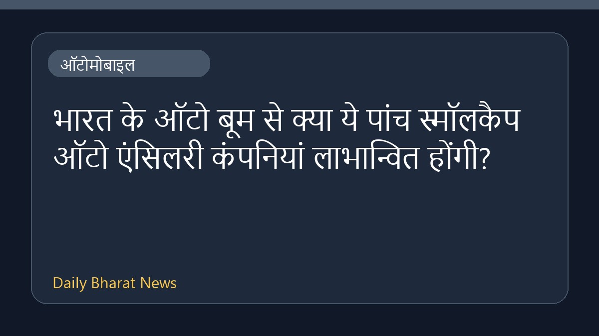

उत्तराखंड के व्यक्ति ने ड्रोन-आधारित उड़ने वाले वाहन का परीक्षण किया

उत्तराखंड के एक व्यक्ति ने ड्रोन-आधारित उड़ने वाले वाहन का परीक्षण उड़ान सफलतापूर्वक पूरा किया है। इस संबंध में उपलब्ध विवरण अभी सीमित हैं, लेकिन इस अनोखे परीक्षण का एक वीडियो सामने आया है। इस वाहन को लेकर ऑटोमोबाइल और तकनीकी क्षेत्र में चर्चा हो रही है। इस घटना से जुड़े अन्य तकनीकी पहलुओं और परीक्षण के बारे में विस्तृत जानकारी अभी सामने नहीं आई है।
मूल स्रोत: Automobile News Sources
Uttarakhand Man Conducts Test Flight Of Drone-Based Flying Vehicle: Watch - NDTV ↗
Uttarakhand Man Conducts Test Flight Of Drone-Based Flying Vehicle: Watch - NDTV ↗
संबंधित खबरें

ऑटोमोबाइलभारत के ऑटो बूम से क्या ये पांच स्मॉलकैप ऑटो एंसिलरी कंपनियां लाभान्वित होंगी?
 ऑटोमोबाइल
ऑटोमोबाइलजुलाई 2026 में भारत का ऑटो खुदरा बाजार रिकॉर्ड 25.91 लाख इकाइयों पर पहुंचा
 ऑटोमोबाइल
ऑटोमोबाइलदक्षिण एशिया में चीन की इलेक्ट्रिक mobilité रणनीति और भारत
 ऑटोमोबाइल
ऑटोमोबाइल